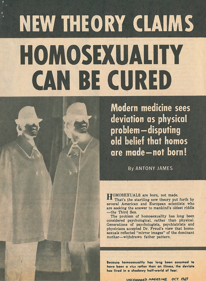

Forced medical treatments

Authorities tried to “correct” people's identities by forcing them to undergo medical
treatments. From the 1950's to the 1970's, conversion therapy became more widespread
in Europe and North America due to a wide belief that there was a way to force up
cisgender and heterosexual norms.
Between the 50's and 60's, the most common method used was aversion therapy, where patients
received electric shocks while seeing same sex images in hope of creating a bad
association with homosexuality. Other extreme methods included ice baths, burning, and
forced labour, all intended to associate pain with same-sex desire. In some cases,
individuals were given the choice between prison and therapy. Woman, bisexuals and non-gender
conformed people faced similar treatments: transgender people were not recognised and had to
go through therapy or were completely denied care. Lesbian women and bisexuals were not
believed to be a real problem and therefore lacked complete representations in society despite
still having to go through therapy in some cases.
Other methods were used: Brain surgery was popularised during the 40's with the American
neurologist Walter Jackson Freeman II, but castration and hypnosis were also used throughout the 20th century.
Hans Eysenck (British psychologist known for his theories of personality and intelligence)
supported these treatments in the 1960s and claimed they were effective, but later research
showed that they were unreliable. By the early 1970s, activists like Peter Tatchell (British
man who has been campaigning for mostly LGBTQ+ and human rights), denounced
these methods, describing them as forms of torture that caused depression and suicidal thoughts.
To conclude, conversion therapy had a lot of consequences. It caused severe psychological
harm, including depression and suicide rather than any actual change.